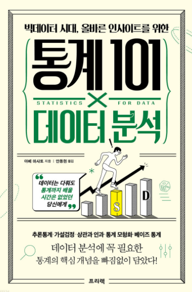
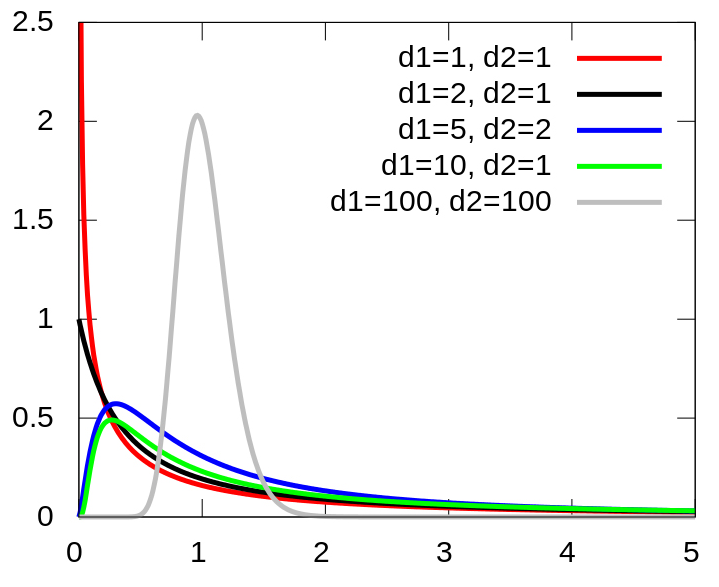

1. 통계학이란?
1.1 데이터를 분석하다
- 데이터 분석의 목적
- 데이터를 요약하는 것
- 대상을 설명하는 것
- 새로 얻을 데이터를 예측하는 것
인과관계 : 2가지 중 하나(원인)을 변화시키면, 다른 하나(결과)도 바꿀 수 있는 관계. 인과관계를 알면 곧 원리(메커니즘)에 관한 지식을 얻는 것이기에 깊은 이해라고 할 수 있다.
상관관계 : 한쪽이 크면 다른 한쪽도 큰(또는 한쪽이 크면 다른 한쪽은 작은) 관계를 말한다. 한쪽을 ’변화시켰다’하더라도 다른 한쪽이 ’변한다’고 단정할 수 없다는 점에서 인과관계와 다르다. 원리에 관련된 몇 가지 가능성을 구별할 수 없으므로, 얕은 이해라 할 수 있다.
선형관계에는 사람이 다루기 쉽고, 해석하기도 쉽다는 특징. 한편, 해석이 어려운 복잡한 관계를 추출하고 예측하는 기계학습이란 방법도 있다.(12장)
1.2 통계학의 역할
- 통계학은 데이터 퍼짐 정도가 클수록 힘을 발휘한다.
- 데이터 분석에서 통계학의 중요한 역할은, 퍼짐(산포, dispersion) 이 있는 데이터에 대해 설명이나 예측을 하는 것.
- 통계학은 이러한 데이터 퍼짐을 ’불확실성’이라 평가하고, 통계학의 목적인 ’대상의 설명과 예측’을 수행
- 통계학은 데이터 퍼짐이나 불확실성에 대처하는 방법을 제공. 그 근거가 되는 것이 데이터 퍼짐이나 불확실성을 확률로 나타내는 확률론이다.
1.3 통계학의 전체 모습
- 기술통계와 추론통계
기술통계(descriptive statistics) : 수집한 데이터를 정리하고 요약하는 방법. 확보한 데이터에만 집중하면서, 데이터 자체의 성질을 이해하는 것을 목표로 한다는 점에 주의.
추론통계(inferential statistics) : 수집한 데이터로부터 데이터의 발생원을 추정하는 방법
- 통계적 추론과 가설검정
추론통계는 크게 2가지가 있다.
통계적 추론(statistical inference) : 데이터에서 가정한 확률 모형의 성질을 추정하는 방법. 예를 들어, 모서리가 닳아버린 주사위라면 각 눈이 나올 확률이 1/6이 아닐지도 모른다. 이럴 때 통계적 추론을 이용하여, 얻은 데이터로부터 각 눈이 어떤 확률로 나오는 주사위인가를 추정할 수 있다.
가설검정(statistical test) : 세운 가설과 얻은 데이터가 얼마나 들어맞는지를 평가하여, 가설을 채택할 것인가를 판단하는 방법
2. 모집단과 표본
2.1 데이터 분석의 목적과 알고자 하는 대상
- 데이터 분석의 목적을 정하기.
- 알고자 하는 대상을 명확히 하기.
2.2 모집단
- 모집단 : 알고자 하는 대상 전체
‘지금 알고자 하는 대상은 무엇인지’, ’무엇을 모집단으로 설정할 것인지’의 문제에는 항상 주의를 기울여야 한다.
- 유한모집단
- 무한모집단
2.3 모집단의 성질을 알다
- 모집단은 데이터 분석에서 알고자 하는 대상 전체를 가리키기 때문에, 모집단의 성질을 알 수 있다면 대상을 설명하거나 이해할 수 있고, 미지의 데이터를 예측할 수도 있게 된다.
- 모집단의 성질이란, 다음과 같이 모집단에 포함된 요소를 특징 짓는 값이다.
- 한국인 남성의 평균 키는 172.5cm이다.
- 한국인 여성의 평균 키는 159.6cm이다.
- 신약을 복용한 사람의 최고 혈압 평균은 120mmHg이다.
- 이 주사위는 모든 눈이 균등하게 나온다.
- 이 주사위는 6의 눈이 1/4 확률로 나온다.
- 그렇다면 이러한 모집단의 성질을 알기 위해서는 어떻게 해야 할까?
- 전수조사 : 모집단에 포함된 모든 요소를 조사
모집단에 포함된 요소의 개수가 한정된, 유한모집단일 때 선택할 수 있는 조사 방법.
전수조사의 경우 ‘분석할 데이터 = 모집단’. 그러므로 획득한 데이터의 특징을 파악하고 기술하기만 해도, 모집단의 성질을 설명하고 이해할 수 있다.
전수조사의 어려움 : 비용이나 시간 면에서 부담이 막대하여 실현 불가능할 때가 대부분.
- 표본조사 : 모집단의 일부를 분석하여 모집단 전체의 성질을 추정하는 추론통계(inferential statistics) 라는 분야가 있으며, 이것이야말로 통계학의 참모습이라 할 수 있다.
표본(sample) : 추론통계에서 조사하는 모집단의 일부
표본추출(sampling) : 모집단에서 표본을 뽑는 것
표본조사 : 표본을 이용해 모집단의 성질을 조사하는 것
표본을 통해 모집단의 성질을 알 수 있는 잘 알려진 방법으로, 선거 출구조사를 들 수 있다. 일부의 표만으로도 당선확실 여부를 알 수 있다.
추론통계는 ’추론’이라는 말에서 알 수 있듯이 모집단의 성질을 100% 알아맞힐 수는 없으며, 어느 정도 불확실성을 염두에 두고 평가하게 된다.
대상을 설명(이해)하고 예측하기 위해서는 모집단의 성질을 알아야 한다.
일반적으로 모집단을 대상으로 한 전수조사는 어렵다.
표본을 조사하면 모집단의 성질을 추정할 수 있다.
표본크기 : 표본에 포함된 요소의 개수를 표본크기(sample size)라 부르며, 보통 알파벳 \(n\)으로 나타낸다. 예를 들어 표본으로 30개를 추출했다면, \(n\)=30이라 표기한다.
통계학에서 샘플 수라고 하면 표본의 개수를 뜻한다. 예를 들어 20명으로 이루어진 표본A와 이와 별개로 30명으로 이루어진 표본B가 있는 경우, 표본은 A, B 2개이므로 샘플 수는 2가 된다. 이처럼 표본크기와 표본의 개수는 혼동하기 쉬우므로 주의.
표본크기는 모집단의 성질을 추정할 때의 확실성이나 가설검정의 결과에도 영향을 끼치기 때문에, 통계분석에 있어 중요한 요소 중 하나.
3. 통계분석의 기초
3.1 데이터 유형
- 모집단과 표본
- 변수 : 데이터 중 공통의 측정 방법으로 얻은 같은 성질의 값
예를 들어, 키는 하나의 변수이다. 변수는 각각 다른 값을 취할 수 있으므로 변수라고 불린다.
변수가 여러 개인 경우, 변수 간의 관계를 밝히고자 데이터를 분석할 수 있다.
통계학에서 변수의 개수는 ’차원’이라 표현되기도 한다.
여러 개의 변수를 포함한 데이터는 ’고차원 데이터’라 한다.
- 다양한 데이터 유형
변수의 유형마다 분석 방법이 달라지기 때문에, 데이터를 수집할 때나 분석을 실행할 때는 변수가 어떤 유형인지 주의 깊게 고려하는 것이 중요
- 양적 변수 (수치형 변수)
수치로 나타낼 수 있는 변수를 양적 변수라 한다. 양적 변수는 다시 이산형과 연속형으로 나눌 수 있다.
- 이산형
얻을 수 있는 값이 점점이 있는 변수를 이산형 양적 변수(이산변수) 라 한다. ex) 주사위의 눈은 나오는 값이 1부터 6까지의 정수
- 연속형
키 173.4cm나 몸무게 65.8kg 같이 간격 없이 이어지는 값으로 나타낼 수 있는 변수를 연속형 양적 변수 (연속변수) 라 한다.
이는 정밀도가 높은 측정 방법을 이용하면, 원리상으로는 소수점 아래 몇 자리든 나타낼 수 있다는 점에서 이산형과는 다르다.
이산형과 연속형의 차이점은 확률분포의 종류와 밀접한 관계가 있으므로, 데이터를 다룰 때는 주의
- 질적 변수 (범주형 변수)
숫자가 아닌 범주로 변수를 나타낼 때, 이를 질적 변수 또는 범주형 변수라 한다. ex) 설문조사의 예/아니오, 동전의 앞/뒤
숫자인 양적 변수와 달리, 변수 사이에 대소 관계는 없다.
또한 범주형 변수는 숫자가 아니므로, 평균값 등의 수치 역시 정의할 수 없다.
3.2 데이터 분포
- 그림으로 데이터 분포 표현하기
’데이터가 어떻게 분포되어 있는지’를 그래프 등으로 시각화하여, 대략적인 데이터 경향을 파악하는 것이 데이터 분석의 첫 단계
데이터 분포를 그림으로 나타내는 데는 어떤 값이 데이터에 몇 개 포함되어 있는가(도수, 빈도, 횟수)를 나타내는 그래프인 도수분포도(히스토그램) 를 자주 사용
- 히스토그램은 그림으로 나타낸 것일 뿐
히스토그램은 대략적인 데이터 구성을 파악하는 것이 목적이지, 무엇인가 결론을 내기 위한 것이 아니라는 점을 명심
3.3 통계량
- 데이터 특징 짓기
수집한 데이터로 이런저런 계산을 수행하여 얻은 값을 일반적으로 통계량 이라 한다.
데이터 그 자체의 성질을 기술하고 요약하는 통계량을, 기술통계량 또는 요약통계량 이라 부른다.
- 통계량과 정보
1개 또는 몇 개의 통계량으로 요약한다는 것은, 데이터에 있는 정보 중 버리는 부분이 있다는 것을 뜻한다. 예를 들어 평균값에는 ’어느 정도 데이터가 퍼져 있는지’의 정보는 포함되지 않습니다. 다른 예로 데이터에 포함된 가장 큰 값인 최댓값도 하나의 통계량이지만 여기에는 데이터 전체의 경향을 알 수 있는 정보가 없다. 이처럼 최댓값은 분포의 중심 위치나 분포 형태에 관한 정보가 주어지지 않으므로, 분포를 파악하는 데는 적합한 통계량이 아니다.
- 다양한 기술통계량
대략적인 분포 위치를 나타내는 대푯값 : 평균값, 중앙값, 최빈값
데이터 퍼짐 정도를 나타내는 값 : 분산, 표준편차
- 평균값(mean)
표본의 평균값은 표본에서 얻었다는 점에서 ’표본평균’이라고도 한다.
\[ \bar{x} = \frac{1}{n}(x_1+x_2+...+x_n) = \frac{1}{n}\sum^n_{i=1} x_i \]
평균값은 계산 시 모든 값을 고려하기 때문에 이상값의 영향을 받기 쉽다는 특징이 있다.
- 중앙값(median)
‘크기 순으로 값을 정렬했을 때 한가운데 위치한 값’
표본크기 \(n\)이 홀수라면 가운데 값은 1개이므로 이 값이 중앙값이다. 한편 표본크기 \(n\)이 짝수일 때는 가운데에 있는 값이 2개이므로, 두 값의 평균값을 중앙값으로 한다.
중앙값은 수치 자체의 정보가 아닌 순서에만 주목하기에, 극단적으로 크거나 작은 값이 있어도 영향을 받지 않는다는 특징이 있다.
- 최빈값(mode)
‘데이터 중 가장 자주 나타나는 값’
처음에 히스토그램을 그려 대략적인 파악을 한 다음, 대푯값으로 적절하게 분포를 특징 지을 수 있는지 확인하는 것이 중요한 데이터 분석 작업 순서라는 점을 꼭 기억
- 분산과 표준편차
데이터 퍼짐을 평가하기 위해서는 분산(variance) 혹은 표준편차(standard deviation, S.D.) 라는 통계량을 계산.
표본에서 구하고, 표본을 평가한다는 점을 강조하여 ’표본분산(sample variance)’이나 ’표본표준편차(sample standard deviation)’라 부르기도 한다.
표본분산 은 표본의 각 값과 표본평균이 어느 정도 떨어져 있는지를 평가하는 것으로, 데이터 퍼짐 상태를 정량화한 통계량이다.
\[ s^2 = \frac{1}{n}\{(x_1-\bar{x})^2 + (x_2-\bar{x})^2+...+(x_n-\bar{x})^2\} = \frac{1}{n}\sum^n_{i=1}(x_i-\bar{x})^2 \]
- 표본분산의 성질
\(s^2 \geqq 0\)
모든 값이 같다면 0
데이터 퍼짐 정도가 크면 \(s^2\)이 커짐
표본표준편차 \(s\)는, 이 표본분산의 제곱근을 취한 값이다.
계산상 분산과 표준편차에는 제곱근인지 아닌지의 차이만 있으며, 포함하는 정보에는 차이가 없다. 분산 단위는 원래 값 단위의 제곱이 되지만, 표준편차는 제곱근을 취하므로 원래 단위와 일치한다. 따라서 데이터 퍼짐 정도를 정량화한 지표로는 표준편차 쪽이 감각적으로 더 알기 쉽게 느껴진다.
- 분산을 확인할 수 있는 상자 수염 그림
이름처럼 상자와 수염으로 구성되며, 각각은 데이터의 분포를 특징 짓는 통계량을 나타낸다.
제1 사분위수(Q1) : 데이터의 25%가 이 값보다 작거나 같음
제2 사분위수(Q2) : 중앙값
제3 사분위수(Q3) : 데이터의 75%가 이 값보다 작거나 같음
사분위간 범위 : 제1 사분위수와 제3 사분위수 간의 거리(Q3-Q1). 상자로 나타낸 부분.
수염은 상자 길이(사분위간 범위)의 1.5배 길이를 상자로부터 늘인 범위 안에서, 최댓값 또는 최솟값을 가리킨다.
이 범위에 포함되지 않은 값은 이상값으로 정의된다.
상자 수염 그림은 중앙값이나 사분위수, 최댓값, 최솟값 등의 통계량은 나타내는 반면, 히스토그램에서 볼 수 있는 상세한 분포 형태 정보는 포함하지 않는다.
- 분포를 시각화하는 다양한 방법
막대그래프(평균값) + 오차 막대(S.D. or S.E.)
바이올린 플롯
스웜 플롯
상자 수염 그림 + 스웜 플롯
~ 67p. 3장 나머지 정리 必
4. 추론통계 ~ 신뢰구간
- 데이터로 모집단의 성질을 추정한다.
4.1 추론통계를 배우기 전에
- 전수조사와 표본조사
전수조사 : 모집단의 모든 요소를 조사
표본조사 : 모집단의 일부인 표본으로 모집단의 성질을 추정
- 데이터를 얻는다는 것
” 데이터(표본)를 얻는다는 것은 무엇인가? ” : 모집단에 포함된 전체 값으로 구성된 분포에서 일부를 추출하는 것
모집단분포를 특징 짓는 양을 모수 또는 파라미터 라 부른다
확률분포와 실현값의 관계는 모집단과 표본의 관계와 매우 비슷
‘모집단 = 확률분포, 표본 = 확률분포를 따르는 실현값’ 이라고 생각하자
” 얻은 실현값으로 이 값을 발생시킨 확률분포를 추정한다 ” 라는 목표로 바꾸어 말할 수 있다.
- 모집단분포 모형화
ex) 성인 남성 키의 분포는 정규분포와 매우 비슷하지만, 엄밀한 의미에서 정규분포가 되는 일은 있을 수 없다.
그러나 있는 그대로를 바로 수학적으로 다룰 수 없을 때가 잦기 때문에, 3장에서 배운 것과 같은 수식 으로 기술하게 된다.
그러면 수학적으로 다룰 수 있는 확률분포(모형)에 근사하여 작업을 진행할 수 있게 되어, 모집단의 추정이 용이해진다.
수학적인 확률분포로 모집단 분포를 근사하는 것을 여기서는 모형화(modeling) 라 부르도록 하자
예를 들어 정규분포로 근사할 수 있다면, 평균과 표준편차 같은 2가지 파라미터만으로 분포를 기술할 수 있으며, 다룰 수도 있게된다.
이 장 후반에 등장하는 t분포는, 이와 같이 모집단이 정규분포라는 가정하에 이용할 수 있는 분포이다.
- 무작위추출
모집단에서 표본을 얻을 때 중요한 것이 무작위추출(random sampling) 이다.
데이터를 얻을 때 모집단에 포함된 요소를 무작위로 선택하여 추출하는 방식
독립적이지 않은 선택방식도 적절하지 않다.
- 무작위추출 방법
이상적인 무작위추출 방법은 표본에 있을 수 있는 모든 요소를 목록으로 만들고, 난수를 이용하여 표본을 정하는 것. 이를 단순무작위추출법 이라 한다.
실제로 자주 사용하는 방법은 층화추출법 이다. 이는 모집단을 몇개의 층(집단)으로 미리 나눈 뒤, 각 층에서 필요한 수의 조사대상을 무작위로 추출하는 방법이다.
그 밖에도 계통추출법, 군집추출법 등 다양한 방법이 있다.
- 편향된 추출로는 올바른 추정이 어려움
4.2 표본오차와 신뢰구간
모집단의 평균 \(\mu\)나 \(\sigma\) 등은 고정된 값이지만, 모집단분포에서 얻은 표본 \(x_1, x_2, ... x_n\)은 확률적으로 변하는 확률변수라는 사실을 염두에 둘 것
확률변수의 정확한 의미는?
일반적으로 표본평균은 모집단평균 \(\mu\)와 일치하지 않는다. 즉 ’정말로 알고 싶은 것’과 ’실제로 손 안에 있는 데이터’에는 어긋남(오차)가 생기는 것. 이런 오차를 표본오차(표집오차, sampling error) 라고 한다.
표본오차는 표본을 추출할 때의 인위적인 실수나 잘못으로 생기는 오차가 아니라, 데이터 퍼짐이 있는 모집단에서 확률적으로 무작위 표본을 고르는 데서 발생하는, 피할 수 없는 오차라는 점에 주의
- 큰 수의 법칙
표본평균과 모집단평균의 관계에는 큰 수의 법칙(law of large numbers) 이 성립한다.
표본크기 \(n\)이 커질수록 표본평균 \(\bar{x}\)가 모집단평균 \(\mu\)에 한없이 가까워진다는 법칙.
다시 말해 표본오차 \(\bar{x}-\mu\)가 \(0\)에 한없이 가까워진다는 뜻이기도 하다.
- 표본오차의 확률분포
표본오차의 확률분포를 알면 어느 정도 크기의 오차가, 어느 정도의 확률로 나타나는지를 알 수 있게 된다.
- 중심극한정리
표본오차의 분포에 관해 중요한 정보를 제공하는 것이 중심극한정리(central limit theorem) 이다.
모집단이 어떤 분포이든 간에, 표본크기 \(n\)이 커질수록 표본평균 \(\bar{x}\)의 분포는 정규분포로 근사할 수 있다는 것을 의미
’표본평균 \(\bar{x}\)의 분포? : 표본크기 \(n\)으로 표본을 추출하고 표본평균 \(\bar{x}\)를 계산하는 작업을 몇 번이고 반복해서, 표본평균을 한데 모아 히스토그램을 그린다는 것.
표본크기 \(n\)이 커질수록 표본평균의 분포는 다음과 같은 정규분포로 근사할 수 있다.
평균 : 모집단평균 \(\mu\)
표준편차 : \(\frac{\sigma}{\sqrt{n}}\)
Chat GPT : 중심극한정리와 대수의 법칙의 차이점이 뭐야?
- 중심극한정리 (Central Limit Theorem):
중심극한정리는 확률론의 기본 개념 중 하나로, 독립적인 확률 변수들의 합 또는 평균이 정규분포에 근사하는 현상을 설명합니다. 중심극한정리는 다음과 같은 특징을 가집니다:
독립적인 확률 변수들의 합 또는 평균은 표본 크기가 충분히 크면 정규분포에 근사한다.
중심극한정리는 모집단의 분포에 상관 없이 적용될 수 있으며, 모집단이 어떤 분포를 따르더라도 표본 평균의 분포는 정규분포에 가까워진다.
- 대수의 법칙 (Law of Large Numbers):
대수의 법칙은 표본 크기가 커질수록 표본 평균이 모집단의 평균에 가까워진다는 원리를 설명합니다. 대수의 법칙은 다음과 같은 특징을 가집니다:
대수의 법칙은 표본 크기가 커질수록 표본 평균이 모집단 평균에 수렴한다.
대수의 법칙은 표본 크기가 충분히 크다면 모집단의 분포에 상관 없이 적용될 수 있으며, 모집단이 어떤 분포를 따르더라도 표본 평균은 모집단 평균에 가까워진다.
차이점:
중심극한정리는 확률 변수들의 합 또는 평균의 분포에 대한 이론을 다루는 것이며, 주로 정규분포와 관련이 있습니다.
대수의 법칙은 표본 크기가 커질 때 표본 평균이 모집단 평균으로 수렴하는 원리를 설명하며, 분포에 대한 특별한 가정이 필요하지 않습니다. 이는 큰 표본 크기를 가지고 있는 경우에는 표본의 평균이 모집단 평균과 거의 같아질 것이라는 것을 의미합니다.
중심극한정리와 대수의 법칙은 통계 분석과 데이터 분석에서 중요한 개념으로 사용되며, 표본 크기와 확률 분포에 대한 이해를 높이는 데 도움을 줍니다.
- 추정량
모집단의 성질을 추정하는 데 사용하는 통계량을 추정량 이라 한다.
표본크기 \(n\)을 무한대로 했을 때, 모집단의 성질과 일치하는 추정량을 일치추정량 이라 하고, 추정량의 평균값(기댓값)이 모집단의 성질과 일치할 때의 추정량은 비편향추정량 이라 한다.
비편향추정량은 매번 얻을 때마다 확률적으로 다른 값이 되지만, 평균으로 보면 모집단의 성질을 과대하지도 과소하지도 않게 나타내는 양을 뜻한다.
모집단의 성질을 추정할 때 편향된 추정은 바람직하지 않다. 그러므로 비편향추정량은 바람직한 추정량이다.
비편향추정량, 일치추정량 ??
추정량 하나하나는 모집단의 성질(여기서는 \(\mu\))에서 벗어나지만, 이를 모아 구한 평균값이 \(\mu\)와 일치하는 경우 이를 비편향추정량이라 부른다.
중심극한정리에서 본 것 처럼 표본평균의 분포의 평균은 모집단의 성질인 \(\mu\)와 일치하므로, 표본평균은 모집단평균 \(\mu\)를 편향되지 않게 추정하는 비편향추정량이다.
한편 표본표준편차 \(s\)(또는 표본분산 \(s^2\))는 사정이 조금 다르다.
표본표준편차 \(s\)의 정의에서 루트 안의 분모는 \(n\)이었다. 기술통계에서 데이터 퍼짐 정도를 평가할 때는 문제가 없지만, 모집단의 표준편차 \(\sigma\)를 과소평가한다는 문제가 있다.
올바르게는 \(n-1\)로 나눈 다음 식이, 모집단 표준편차 \(\sigma\)의 비편향추정량이 된다.
\(s = \sqrt{s^2} = \sqrt{\frac{1}{n-1}\sum^n_{i=1}(x_i-\bar{x})^2}\)
\(n\)으로 나누면 왜 과소평가가 되는가?
각 값 \(x_i\)와 표본평균 \(\bar{x}\)의 차이를 제곱하여 값이 얼마나 퍼졌는지를 측정하지만 원래 \((x_i-\mu)^2\)로 계산해야 하는 것을 \(\mu\)가 미지수이므로 \((x_i-\bar{x})^2\)로 바꾼 것이다.
\(\bar{x}\)는 \(\mu\)와 일치하지 않으며, 각 값 \(x_i\)와 \(\mu\)의 위치 관계 또는 각 값 \(x_i\)와 \(\bar{x}\)의 위치 관계를 생각하면 \(x_i\)는 \(\mu\)보다도 \(\bar{x}\)에 가까이 있을 것이다.
그러므로 \((x_i-\bar{x})^2\)의 합은 \((x_i-\mu)^2\)보다도 작은 값이 된다.
따라서 \(n\)으로 나누지 않고 \(n-1\)로 나누어 과소평가를 보정하는 것
- 표본오차의 분포
표본크기 \(n\)이 커질수록 표본오차 \(\bar{x}-\mu\)의 분포는 다음 정규분포로 근사할 수 있다.
평균 : 0
표준편차 : \(\frac{\sigma}{\sqrt{n}}\)
표본오차 \(\bar{x}-\mu\)의 분포는 모집단의 표준편차 \(\sigma\)와 표본크기 \(n\) 등 2개의 값만 정해지면 알 수 있다는 것. 이 \(\frac{\sigma}{\sqrt{n}}\)을 표준오차(standard error) 라 한다.
\(\sigma\)는 모집단의 성질이므로 보통 우리로선 알 수 없는 미지의 숫자이다. 그러므로 앞서 살펴본 표본에서 추정한 비편향표준편차 \(s\)를 \(\sigma\) 대신 사용한 \(\frac{s}{\sqrt{n}}\)를 표준오차로 삼는다.
이때 표본오차(단 \(\frac{s}{\sqrt{n}}\)으로 나눔)는 정규분포가 아니라 정규분포와 매우 닮은 t분포를 따르게 된다.
- 신뢰구간이란?
표본오차의 확률분포는 얼마나 큰 오차가 어느 정도의 확률로 나타나는가를 알 수 있다.
간단하게 오차를 정량화하기 위해서, 신뢰구간(confidence interval) 이라는 개념을 도입
정규분포의 성질에서 \(평균값 \pm\) 2 \(\times 표준편차\) 범위에 약 95%의 값을 포함하고 있었다. 즉, 정규분포에서 하나의 값을 무작위로 꺼내면 95%의 확률로 그 범위에 포함된다는 뜻
이 개념을 그대로 표본오차의 정규분포에 적용해보면
표본오차의 약 95%는 \(0-2\times \frac{s}{\sqrt{n}} \leq \bar{x} - \mu \leq 0 + 2 \times \frac{s}{\sqrt{n}}\)
\(\bar{x}\) 에서 \(\mu\) 를 알고 싶기 때문에 이항하고 음수를 곱하면 \(\bar{x} - 2 \times \frac{s}{\sqrt{n}} \leq \mu \leq \bar{x} + 2 \times \frac{s}{\sqrt{n}}\)
- 신뢰구간의 해석
OO% 신뢰구간을 해석하면 “OO%의 확률로 이 구간에 모집단평균 \(\mu\)가 있다.” 가 된다.
단, 확률변수는 모집단평균 \(\mu\)가 아니라 표본평균 \(\bar{x}\)(또는 신뢰구간)이다.
즉 \(\mu\)가 확률적으로 변화하여 그 구간에 포함되는 것이 아니라, 모집단에서 표본을 추출하여 OO% 신뢰구간을 구하는 작업을 100번 반복했을 때 평균적으로 그 구간에 \(\mu\)가 포함되는 것이 OO번이란 뜻.
하나의 표본에서 얻은 신뢰구간은 \(\mu\)를 포함하거나 포함하지 않거나 둘 중 하나이다.
신뢰구간은 표본에서 구한 모집단 \(\mu\)의 추정값을 어느 정도 신뢰할 수 있는지를 나타낸다고 할 수 있다.
신뢰구간이 좁다면 추정값 가까이에 \(\mu\)가 있다고 생각할 수 있으므로, 추정값은 신뢰할 수 있는 값이다. 반대로 신뢰구간이 넓다면 추정값과 모집단평균 \(\mu\)사이의 오차는 커지는 경향이 있으므로 신뢰도는 낮다.
OO% 신뢰구간에서 ’OO%’에는 일반적으로 95%를 사용한다. 이 숫자는 과학계에서 관례로 사용되어 온 것으로, 필연성은 없다.
가설검정에서 유의수준 5%는 95% 신뢰구간과 동전의 양면과 같은 관계이다.
95% 신뢰구간이란 평균적으로 20번 중 1번 정도 벗어난다는, 달리 말하면 20번 중 19번은 구간에 모집단평균을 포함한다는 뜻이다.
- t분포와 95% 신뢰구간
정규분포의 성질을 “\(평균값\pm 2\times 표준편차\)”안에 95%라고 대략적으로 말해왔지만 정확하게는 “\(평균값\pm 1.96\times 표준편차\)”의 범위가 95%가 된다.
문제가 되는 것은 중심극한정리는 표본크기 \(n\)이 커질수록 근사적으로 성립하기에 실제 데이터 분석에서 볼 수 있는 작은 표본크기의 경우 표본오차가 정규분포를 따른다고 말할 수 없다는 것과 모집단의 \(\sigma\) 대신 \(s\)를 써야만 한다는 것.
이때 활약하는 것이 \(t\)분포
\(t\)분포는 모집단이 정규분포라는 가정하에 미지의 모집단 표준편차 \(\sigma\)를 표본으로 계산한 비편향표준편차 \(s\)로 대용했을 때, \(\bar{x}-\mu\)를 표준오차 \(\frac{s}{\sqrt{n}}\)로 나누어 표준화한 값이 따르는 분포이다.
\[\frac{\bar{x}-\mu}{\frac{s}{\sqrt{n}}}\]
이 값은 표준오차 \(\frac{s}{\sqrt{n}}\)를 단위로 표본오차 \(\bar{x}-\mu\)가 몇 개분인지를 나타낸다.(3장의 표준화와 마찬가지)
복잡하다고 느낄 수도 있겠으나, \(t\)분포 자체는 정규분포와 매우 비슷한 형태이며 표본크기 \(n\)에 따라 모양이 조금 달라질 뿐, 신뢰구간을 구하는 논리는 그대로이다.
95%라는 엄밀한 값을 얻고자 미세 조정하는 것으로 생각하면 된다.
아울러 표본크기 \(n\)이 커짐에 따라, \(t\)분포는 정규분포에 가까워진다.
\(t\)분포에서 표본크기 \(n=10\)인 경우에는 평균 0, 표준편차 1인 정규분포보다 조금 넓어져 하위 2.5%, 상위 2.5%인 지점이 -2.26과 +2.26이 된다 (정규분포는 -1.96, +1.96)
그러므로 신뢰구간을 구하는 식에서는 \(\pm 2\)나 \(\pm 1.96\)이 아닌 \(\pm 2.26\)을 \(\frac{s}{\sqrt{n}}\)에 곱해 계산한다.
- 정밀도를 높이려면
보다 신뢰 가능한 평균값을 추정하고 싶을 때는 어떻게 할까?
오차분포의 너비를 나타내는 표준오차 에 주목해보면 이를 작게 만들기 위해서는 분자인 비편향표준편차 \(s\)를 작게 하거나, 분모인 표본크기 \(n\)을 크게 하는 두 가지 방법이 있다.
\(s\)(또는 \(\sigma\))는 모집단 데이터 퍼짐이라는 모집단 그 자체의 성질에서 유래하기에 작게 만들기 어렵지만, 측정한 데이터 퍼짐(변동) 정도를 줄일 수는 있다. 데이터 퍼짐이 증가하면 결과적으로 \(s\)(또는 \(\sigma\))가 커지기 때문에, 측정을 한층 정밀하게 실시하는 식으로 대처 가능한 경우도 있다.
표본크기 \(n\)에 관해서는, \(n\)을 크게 만듦으로써 더 높은 정밀도로 추정할 수 있다.
- \(t\)분포를 사용할 때 주의할 점
표본크기 \(n\)이 작아도 적용 가능한 %t$분포에는 ’정규분포에서 얻은 데이터’라는 가정이 필요하다. 즉, \(t\)분포는 데이터 \(x_1, x_2, ... , x_n\)을 정규분포라는 모형에서 얻었을 때의 (표준화된) 표본오차가 따르는 분포이다. 데이터의 배경에 잇는 모집단분포가 완벽한 정규분포일 수는 없으므로, 얻은 95% 신뢰구간은 정확한 95%가 아니라는 점에 주의.
특히 문제가 되는 것은 정규분포와 현저하게 다른 분포에서 데이터를 얻었을 때이다. 이 경우 95% 신뢰구간을 구해도 95%에서 벗어날 수 있어 주의해야 한다.
단, 표본크기 \(n\)이 클 때는 중심극한정리에 따라 모집단이 정규분포가 아니더라도 표본평균을 정규분포로 근사할 수 있으므로 신뢰구간은 정확해진다.
p.151 ~
모수검정 : 모집단이 특정분포를 따른다는 가정을 둔 가설검정
정규분포로부터 얻어졌다고 간주할 수 있는 성질 (정규성 normality를 가졌다.)
반대는 특정분포로 가정을 못하는 경우가 있다. ex) 좌우 비대칭 분포, 이상값이 있는 분포라면 평균이나 표준편차는 도움이 되지 않음, 모수검정 이용이 적절하지 않다. 그 대신 평균, 표준펴나 등의 파라미터에 기반을 두지 않는 ’비모수 검정’으로 분류되는 방법을 이용
정규성 조사 (귀무가설에 정규성 가정)
모수검정에서는 각 집단의 데이터에 정규성이 있어야한다.
정규성 조사법 :
- Q-Q플롯(분위수-분위수 그림)
- 샤피로-윌크 검정 (가설검정으로 조사)
- 콜모고로프-스미르노프 (K-S) 검정
등분산성 조사 (귀무가설에 등분산 가정)
t검정, 분산분석 => 분산이 같은 모집단으로부터 획득되었다는 가정이 필요
- 등분산성 조사법 :
- 바틀렛 검정
- 레빈 검정
- 등분산성 조사법 :
데이터에 정규성이 없는 경우? → 비모수검정 (평균값 대신 분포의 위치를 나타내는 대푯값에 주목하여 해석)
- 윌콕슨 순위합 검정(wil-coxon rank sum test) : 평균값 대신 각 데이터 값의 순위에 기반하여 검정
- 맨-휘트니 U 검정
- 비교할 2개 집단의 분포 모양 자체가 같아야함
- 플리그너-폴리셀로 검정
- 브루너-문첼 검정
여기까지는 2개 표본 비교
- 분산분석(ANOVA, Analysis of variance) : 3개 집단 이상의 평균값 비교
- 귀무가설 : 모든 집단의 평균이 같다 (\(\mu_A = \mu_B = \mu_C\))
- 대립가설 : 적어도 한 쌍에는 차이가 있다.
- F값 = (평균적인 집단간 변동) / (평균적인 집단 내 변동)
- 집단 내 변동 = 오차에 따른 변동
- 집단 간 변동 = 효과에 따른 변동

자유도(degree of freedom) : 자유로이 움직일 수 있는 변수의 수
ex) 표본크기가 n=10인 표본이라면 자유도는 10이지만 표본평균을 계산한 이후의 자유도는 9가 된다.
표본평균이 확정되었기에 9개의 데이터가 정해지면 남은 1개의 값을 확정할 수 있기 때문
일표본 t검정 (가정) vs 이표본 t검정
정규분포 ㅡ t분포 ㅡ t검정 관계